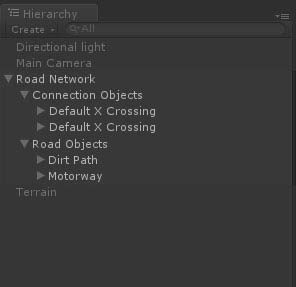
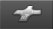
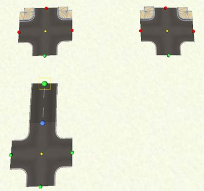
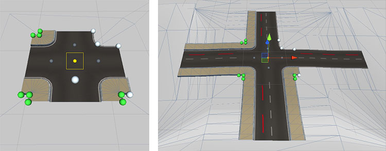

|
EasyRoads3D V3 Manual | |
Intersections [Pro] One of the new features in EasyRoads3D v3 is support for intersections. EasyRoads3D includes two types of intersections: dynamic crossing / connection prefabs and custom crossing / connection prefabs. Dynamic crossing / connection prefabs are scripted and can be customized to your requirements, width, sidewalks, materials, etc. Custom crossing / connection prefabs are prefabs based on your own meshes. This system can be used to add any type of intersection or road connection that is currently not supported yet. They interact with road in the same way as the built-in prefabs. Roads can be attached and pulled out of to these custom prefabs just like with dynamic prefabs.
In v3 all intersections are child objects of "Connection Objects" which is a child of the main Road Network game object. 
CREATING AN INTERSECTION IN THE SCENE There are three ways to add an intersection in the scene: 1. Select any marker of a road and select the Crossing / Connection tab  In the Inspector. All matching dynamic and custom prefabs will be listed. Press one of these connection prefabs. The prefab will automatically connect to the selected marker. 2. Select the same crossings tab in the Inspector but without any road selected. This time all available crossing types will be listed. Select the type you want to add directly in the scene, it will be highlighted. SHIFT + click in the scene at the position where you want to place this crossing. The crossing will be instantiated automatically at the mouse position. In the case a road is selected and only the matching prefabs are displayed while you actually want to add another prefab, you can press the "Instantiate New Connection Prefab" button near the top. This willd eselect the road and show all prefabs as described above. 3. Intersections can be added by snapping markers to other road sections. This can be the same road or another and can be any marker. After moving the selected marker over another road section the snapping position will be highlighted in blue when a matching connection prefab exists. Different road types are supported, like the railroad crossing in the demo package, as long as a prefab exists with matching road types at positions matching the scene situation. NOTE: The third snapping option will not work when custom sidewalk settings are involved not exactly matching the setup of the involved crossings. In that case the marker of the other road where the currently selected road should connect can be selected, insert the crossing at that point and connect the initially selected road.
STARTING NEW ROADS FROM AN INTERSECTION CONNECTION Move the scene camera towards an intersection instance. You will see green handles at each available connection. Move the mouse to one of the handles, the yellow rectangle move handle will appear. Click and drag to pull out a new road from this connection. The road will automatically inherit the selected road type settings of the specific crossing connection including possibly activated side objects of the associated road type. Tip: After pulling out a new road from a connection the road type can be updated in the Inspector of the road provided that no sidewalks are active.
CONNECTING EXISTING ROADS TO AN INTERSECTION The first and last marker of a non closed road can be connected to a crossing connection provided that there is a road type match or at least a match in the shape of the road and the connection. When the road is already connected to a crossing on the other side, all crossing connections that do not match the selected road geometry will be displayed with red handles. It will not be possible to connect the road to these connections. Roads can only be attached to connections with green handles.  To avoid connections displaying in red for custom crossings with slightly different connection vertex positions, this currently checks on the vertex count of the connection shape only. The road type does not necessarily have to match the road types associated with the connection, the road shape (vertex count) however should match.
To the change the position of a crossing, select the prefab by clicking the center yellow handle. Hit the M (move handle) or W (position gizmo) key to show the preferred position handle / gizmo. You can now move the crossing. Attached roads will adapt to the updated position.
When you attach a new crossing to a road, the crossing will be aligned in the corresponding direction. This connection will automatically inherit alignment priority. Whenever you change the shape of the connected road, the crossing will be aligned accordingly. The connection with alignment priority is highlighted with a white handle in front of it. When you select the crossing prefab (click the center yellow sphere handle), you will see additional grey alignment handles for each connection (see the image below) in the center of the road at the start of the connection. You can use to this to change the connection with alignment priority or you can click the white active handle to disable auto alignment for this crossing. 
SIDEWALK CONTROL Dynamic crossing prefabs fully support sidewalks. Crossing prefabs can be created by default with sidewalks enabled. The sidewalks active state can be customized per crossing connection and per crossing connection corner. When selecting a crossing prefab (click the center yellow handle) you will see 3 green sphere handles inside each crossing corner (see above image). When sidwewalks are inactive for that corner all 3 handles will be white. See the same image above. The middle handle controls the visibility of the sidewalk segment on that crossing corner. The outer two handles control the active status of sidewalks on connected roads. When starting a new road, the road will automatically inherit the sidewalk settings of the associated crossing connection. When attaching a new crossing prefab to a road while the road is already connected to a crossing on the other side, the associated connection corners of the new crossing will inherit the current sidewalk settings of the road. When you change crossing corner handles while a road is attached, the road sidewalk status will update. Possibly connected crossings on the other side of the road will update as well. Notes: Corner handles displayed in Red. This means that the shape of the selected road does not match the shape of the connection. This can be because the connection prefab on the other end of the road is a custom prefab with fixed sidewalk settings. This will also happen when the road type of the selected road does not match the default road type assigned to that crossing connection. For example a dirt track connected to an asphalt X crossing. In this case sidewalks cannot be added to the dirt track. Also, it could be that the sidewalk outer handles of the crossing connection are switched off. This will close the sidewalk on the road side. A road with active sidewalks cannot connect in that case. Pressing these outer handles will activate them. Afterwards the road with sidewalks will connect. This will be further optimized in v3.2 so sidewalks will auto connect regardless the state of the outer handles.
Alternatively crossing prefab can be rotated manually. Select the prefab by clicking the center yellow handle. Hit the E key to show the rotation gizmo. The crossing can now rotate. Attached roads will adapt to the updated rotation. For roundabouts you can select relative to which connection the roundabout should rotate. As soon as the rotation gizmo is selected you will see grey handles in the center of each connection. The white handle represents the currently selected connection relative to which the roundabout will be rotated. If no connection is selected the roundabout will be rotated on its global orientation. [screenshot] Before starting with a new project it is recommended to think about the scenes you want to make and which type of crossings will be needed. By creating project / scene specific crossing prefabs you will be able to reuse them which will greatly improve the workflow and productivity. Click here for full information about creating crossing prefabs.
An intersection can be removed by clicking the yellow handle in the center of the intersection. This will select the connection, click "Delete Connection" in the Inspector to remove it. When a marker is selected with a connection attached you will also see a button "Delete Connected Object". This will also remove the connection.
|
|